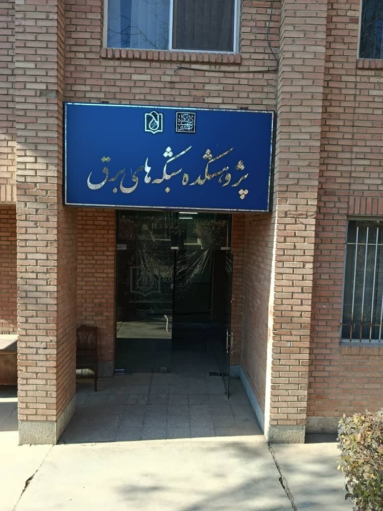

A specialized center for electrical-network studies and technology
The Electrical Networks Research Institute began its activities in 1400 (Solar Hijri) at Shahid Beheshti University. It was established to participate in studies and technology related to electrical networks and to respond to the country’s research needs through specialized centers.
Based on the Institute’s official objectives, specialist collaboration is organized through the five pathways below. Send your subject and contact details to the Institute by email.
01
Joint research
Power-industry research projects
Cooperation on research projects responding to power-industry needs.
02
Specialist services
Technical and engineering services
Services for different sectors of the power industry.
03
Technology development
Localization and knowledge transfer
Transferring and localizing technical knowledge required by the country.
04
University and industry
Thesis and dissertation support
Directing graduate research toward useful power-industry outcomes.
05

Skills development
Specialist education
Training skilled personnel and holding short specialist courses.
Specialist contact
Send your collaboration topic to the Institute
Joint research, engineering services, specialist education, knowledge transfer or a thesis proposal
Scientific publishingSpecialist educationConferences and seminarsInternational collaborationEngineering services
Publishing
Scientific-research journal
Authorization from the Ministry of Science for the journal “Research and Technology in the Power Industry,” intended to publish effective industry and university research.
Education
Electricity-market workshops
Several electricity-market workshops with Stockholm University and Iran Grid Management Company for experts from distribution and regional electricity companies across the country.
Conference
Renewable-energy conference
Participation in the seventh International Conference on Renewable Energy and Distributed Generation of Iran.
International
Smart-cities seminar
A periodic international seminar on “Transportation Challenges in Iran’s Future Smart Cities” with the Technical University of Berlin.
Industry
Company collaboration
Educational, research, engineering and implementation cooperation with companies including Moshanir, and long-term cooperation agreements.
Engineering
Technical and engineering services
Relay testing and protection review at Shahid Rajaee Power Plant in Sari.
Assessment of reduced-frequency grid operation on equipment and system security
Iran Grid Management Company
Phasor-data visualization, state estimation and voltage-stability analysis for transmission monitoring
Iran Grid Management Company
Generating-unit participation in secondary frequency-control ancillary services
Tavanir
Specialist transmission education with a knowledge-management approach
Other introduced projects
01
Maintenance-planning software for MAPNA 2.5 MW wind turbines.
02
Relay testing and protection review at Shahid Rajaee Power Plant in Sari.
03
Assessment and determination of network protection settings with distributed-generation resources.
04
Measurement-based assessment of each equipment category’s share of losses in the Hormozgan electricity distribution network under environmental conditions.
8 documented projects are shown.
Education project
Reviewing and defining specialist transmission and development courses through knowledge management
The specialist electricity-course system prepared by universities and industry experts in 1382 SH had not been updated in line with rapid technological change and no longer met the needs of companies and learners. Tavanir authorized the definition of situational courses; however, their number often exceeded the approved courses, creating inconsistencies in company training calendars and budgets.
Project structure
Steering committee: Tavanir representatives and project executors providing guidance, removing obstacles, facilitating expert cooperation and approving interim and final reports.
Specialist subcommittees: Groups aligned with transmission-sector roles, contributing problems, solutions, current-state analysis, target-state definition and gap analysis.
Delivery phases
Phase one: Review the current courses and occupational, organizational, technological and strategic needs.
Phase two: Define the target state, analyze gaps and select learning strategies.
Artificial intelligence and smart grids, power-industry restructuring, renewable energy, electrical-network protection and control, and power-system operation and planning.
What forms of collaboration are available?
Power-industry research projects, technical and engineering services, technical-knowledge localization and transfer, thesis and dissertation support, and specialist education.
When did the Institute begin its activities?
The Institute began its activities in 1400 SH at Shahid Beheshti University.
How can I propose a project or specialist request?